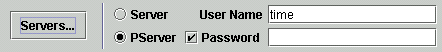

Common Login Area
The common login area is a set of input fields and radio buttons that
describe how you wish to connect to the CVS Server, and the login
information you wish to use to access the server. This information
is grouped together because the login information depends on the
connection method that you select.
The following is a picture of the common login area:

Server vs Pserver
The two radio buttons titled 'Pserver', and 'Server', determine the
connection method used to access the CVS server. The Pserver
method connects to the server directly via a TCP socket. The Server
method connects to the server using RSH or SSH. The CVS server's
system administrator can tell you which method to use.
User Name and Password
The user name is the same as a login name. It is the name that is
used to authenticate you when you connect to the CVS server. The
password is also used for authentication. If you select the Server
method, the Password checkbox and Password text field will be made
inactive. This is because the password is not used when you use
When you are presented with the FileDialog, navigate to the top level
directory of the local working directory. Then open the 'CVS' directory
in that top level directory. Then select the 'Entries' file inside
the 'CVS' directory and 'Open' the file.